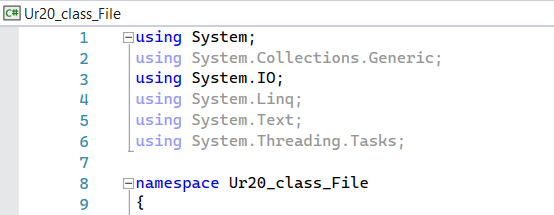
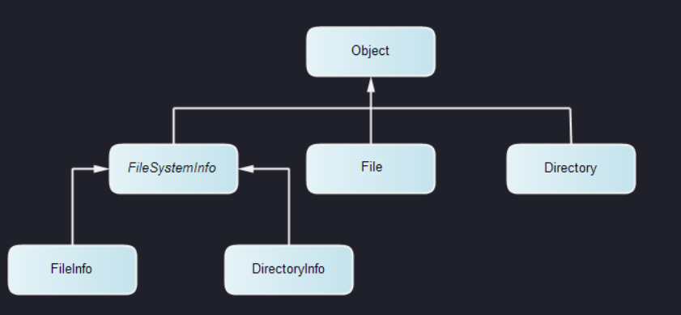

| Урок 21. Пр. 9. Файлы последовательного доступа. | ||
| Оглавление | ||
| Пространство имен
System.IO в .NET — это
область библиотек базовых классов, посвященная службам файлового
ввода-вывода, а также ввода-вывода из памяти. Классы
Directory и File содержат только
статические методы, а их экземпляры никогда не
создаются.  
Класс File
используется для простых операций с файлами, когда не требуется
хранить состояние файла между вызовами методов. Например,
для копирования, перемещения, переименования, создания,
открытия, удаления и добавления в один файл одновременно. Также
класс File можно применять для получения и задания атрибутов
файла или даты и времени, связанных с созданием, доступом и
записью файла.
Класс FileStream
используется для работы с файлами на более низком уровне, в том
числе для чтения из файла и записи
в него. Он позволяет работать как с
текстовыми файлами, так и с бинарными. Например, при работе с
различными бинарными файлами, имеющими определённую структуру,
FileStream полезен
для извлечения определённых порций информации и её обработки.
Выбор между классами зависит от конкретных задач и требований к
работе с файлами.
|
|
|
|